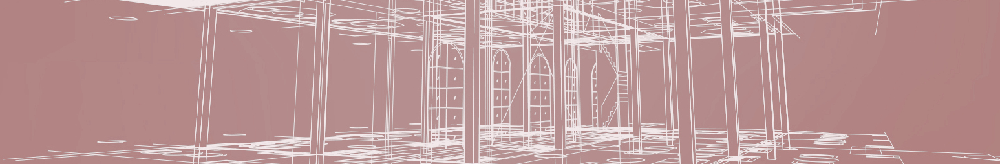

Stirchley Co-operative Development
Developing and growing co-operation in Stirchley
About us
Stirchley Co-operative Development is a community organisation focused on building co-operation in Stirchley, with the aim of giving the people of Stirchley more control over their home and work environments. We want to help push back the tide of gentrification and soaring housing prices by creating sustainable and affordable housing and work premises.
We are a co-operative, which means that each one of our tenants has an equal vote in the running of the building in which they live or work, and we are not-for-profit, so that rents are not ultimately predicated upon generating revenue for a landlord or property developer. As a co-operative we wish to support and grow other co-operatives in the community by providing them with secure and affordable premises.
The housing we build is to a high standard, with an emphasis on being environmentally friendly, using sustainable materials and with a high energy efficiency level. In addition to affordable rents this helps keep the running costs low for residents who need to spend less on energy bills. We also have a strong emphasis on community cohesion, as our buildings incorporate plenty of space for members of the community to meet and interact, and because the operation of the building is run collectively, residents are encouraged to take an active role in the day-to-day management of their environment.